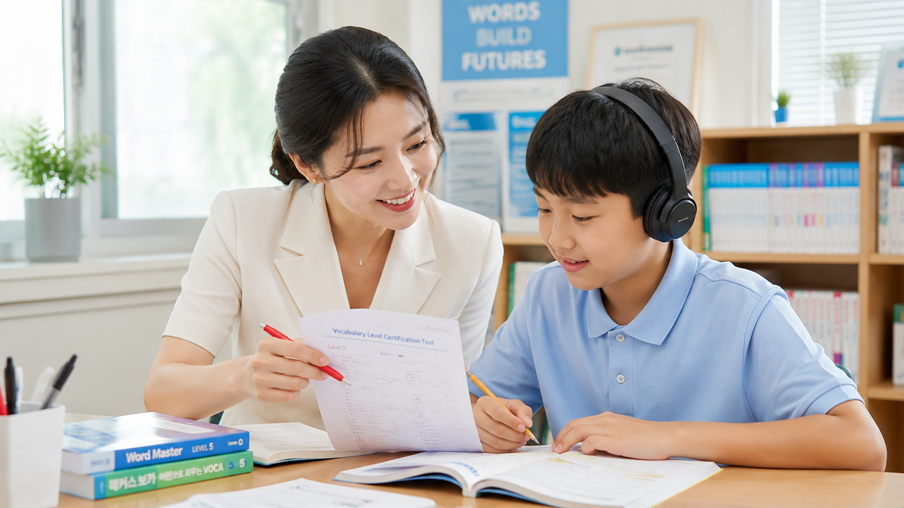

초등 기초가 부족해 중학교 내신이 무너질까 불안해요.
기초 음가 원리를 꿰뚫는 1개월 파닉스와 문장 구조 훈련으로 읽기와 쓰기의 기반을 세웁니다.
1개월 완성 기적의 파닉스부터 초4~수능 단어·듣기 급수시험제도까지. 대형학원에서 놓치기 쉬운 우리 아이, 소수정예 100% 원장 직강으로 실력의 차이를 만듭니다.
기초 음가 원리를 꿰뚫는 1개월 파닉스와 문장 구조 훈련으로 읽기와 쓰기의 기반을 세웁니다.
초4~수능 단어 급수시험제도와 누적 복습 루틴으로 어휘를 장기기억으로 전환합니다.
전 타임 소수정예 원장 직강으로 당일 과제, 오답, 취약점을 바로 확인하고 보완합니다.
단계별 듣기 급수제와 학교별 기출·서술형 첨삭 시스템으로 실전 감각을 끌어올립니다.
단순 주입식이 아닌 음가 결합 원리 중심의 직관 교수법으로 알파벳만 알던 아이도 스스로 읽는 경험을 만듭니다.
교육부 지정 필수 어휘부터 수능 고난도 어휘까지 단계별로 급수화해 꾸준한 성취감을 쌓습니다.
연음, 딕테이션, 기출 듣기 유형을 단계별로 체화해 중학 듣기평가와 수능 듣기의 기본기를 앞당깁니다.

영어는 단순히 성적만을 위한 암기 과목이 아닙니다. 아이들이 스스로 성취감을 느끼며 더 넓은 세상과 자신 있게 소통할 수 있도록, 20년의 모든 노하우를 쏟아 한 명 한 명 정성을 다해 지도합니다.
기초 다지기 & 영어 자신감 도약
내신 1등급 완성 & 수능 실전력 구축
학생별 현재 수준 및 어휘·문법 취약 영역을 정밀 진단합니다.
소수정예 수준별 수업으로 개별 이해도에 맞춰 코칭합니다.
단어 급수 통과와 당일 과제 완성을 확인하고 귀가합니다.
진도, 급수 달성 현황, 개선 과정을 투명하게 공유합니다.
유베스트영어는 아이가 왜 막혔는지, 어떤 순서로 회복해야 하는지, 가정에서는 무엇을 확인하면 좋은지까지 구체적으로 안내합니다.
20년 경력의 황미정 원장이 100% 직접 지도하며, 학생 개개인의 이해도에 맞춘 소수정예 밀착형 개별 맞춤 수업으로 운영됩니다.
네. 음가의 원리를 직관적으로 이해시키는 압축 교수법을 통해 영어를 처음 접하는 학생도 4주 만에 스스로 읽고 발음하는 기반을 갖출 수 있습니다.
초4부터 수능까지 필수인 어휘와 듣기를 단계별 급수로 나누어, 망각 없이 완전 체화할 수 있도록 설계한 누적 학습 시스템입니다.
인근 중학교별 교과서 본문, 문법 포인트, 기출 변형 문제, 서술형 및 수행평가 첨삭까지 밀착 대비합니다.
평일 오후 2시부터 7시까지 운영됩니다. 수업 중 통화가 어려울 수 있으니 상담 신청 폼이나 문자로 남겨주시면 순차 연락드립니다.
수강료와 보강 기준은 학년, 과정, 진단 결과에 따라 상담 시 상세히 안내드립니다.